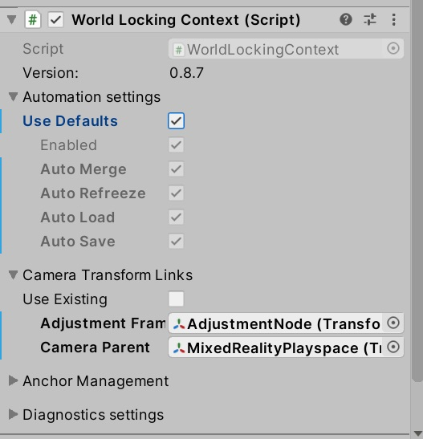
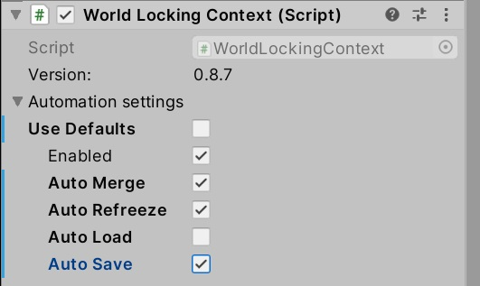
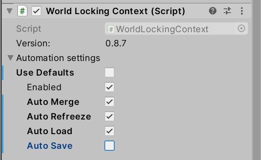
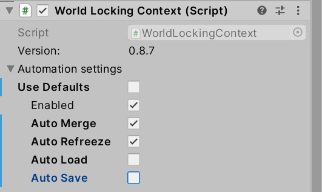
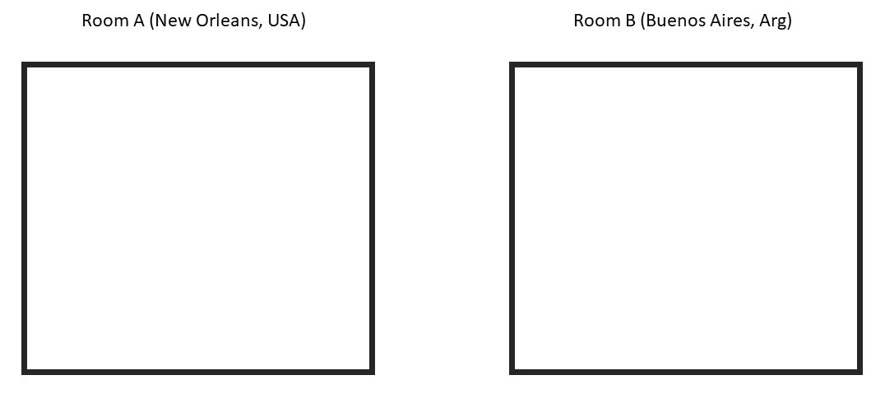
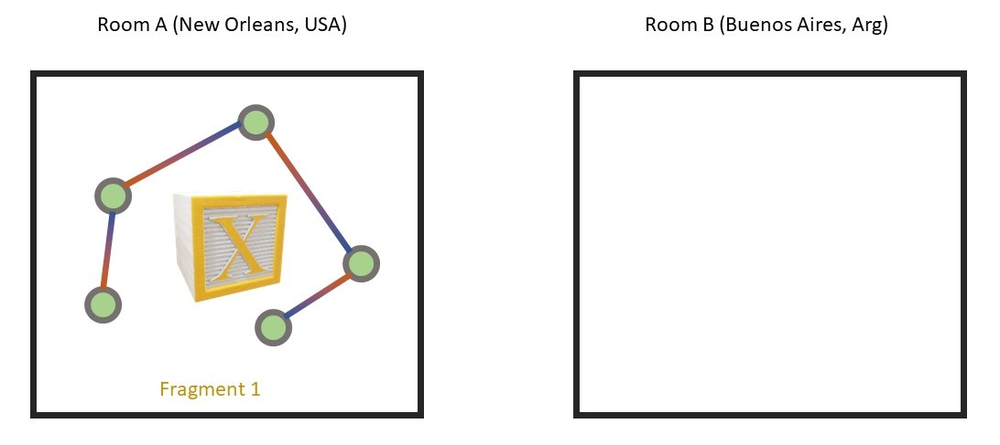
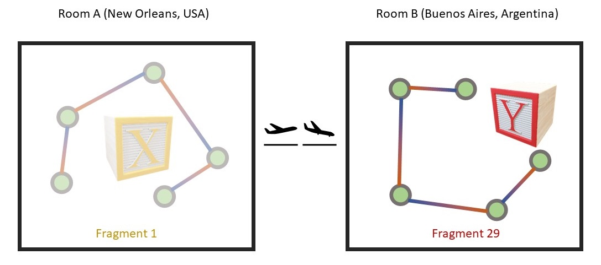

Persistence tricks
Persistence is available where supported by the underlying platform. Currently, this is limited to the HoloLens family of devices, using Unity's built-in VR support (Legacy XR).
Basic persistence
Basic persistence for World Locking Tools comes enabled by default. This enabling comes in two parts.

The relevant checkboxes here are the "Auto Load" and "Auto Save", which are checked. You might notice they are greyed out. That's because they are part of the "Use Defaults" choice. Disabling "Use Defaults" enables the selection of arbitrary combinations of the Automation options.
Further reading is available on these settings, and on manipulating them from script.
Auto Save
The Auto Save option directs WLT to make frequent and regular state saves while running the application. At any time, the application may be terminated with minimal loss of state.
Auto Load
The Auto Load option directs WLT to load any previously saved state at startup. This effectively allows the application to resume a new session where it left off (w.r.t. WLT) from the last session.
Full persistence
With both Auto Save and Auto Load enabled, WLT operates seamlessly across sessions. While the position and orientation of global space is essentially arbitrary on the first run (since there is no previous state saved, it uses the head pose at startup as the origin), subsequent runs will share that same coordinate frame.
This leads to interesting behavior when the application starts a new session in a space disconnected from the previous session's space. See the persistence by location section below for details.
Note
The Auto Save and Auto Load settings also apply to global SpacePins. See below for details.
Application control over persistence
The default full persistence is quite suitable for a broad range of applications.
Some applications, however, might want finer control over the process.
It may seem odd that enabling WLT automatic persistence is broken into two properties, the Auto Save and the Auto Load. Examining cases where the two are used independently might provide insights into the overall persistence system.
Auto Save but not Auto Load

With this configuration, WLT is set to periodically save its state. However, it will not automatically load any persisted state at startup.
Rather, the system will start in a fresh state, as if it is the first time being run on this device. Only after an explicit request to Load() will it restore the previous session's state.
This allows the application to decide whether or not restoring previous session state would be appropriate, and even to modify the data being restored if necessary.
The general WLT save state is in the file "LocalState/frozenWorldState.hkfw". Once created by WLT, that file can be copied to another location and restored back at the application's discretion.
The save file for alignment (SpacePin) data defaults to "LocalState/Persistence/Alignment.fwb". However, that can be overridden by the application via the alignment manager's SaveFileName.
Note that the decision to load the previous session's state with this configuration needs to be made at startup. Once running the previous session's saved state will be overwritten with this session's state. For a more flexible setup, see Manual save and load below.
Manual save but Auto Load

In this configuration, WLT will load any available state from a previous session at startup. It will not, however, automatically save state. This allows the application to decide if and when state is worth saving, with a call to Save().
Note that Auto Load only tells WLT to load any available state at startup. The application is free to restore any saved state at any time with an explicit call to Load().
Manual save and load

The application may choose to keep total control over the save and load process.
State will then only be saved with an explicit call from the application to Save(), and only loaded with an explicit call to Load().
The state loaded by the call to Load() might have been saved earlier in this session, or in a previous session.
Disabling persistence
As explained above, persistence is always available to the application from script. Automated persistence may be enabled and disabled from script or through the WorldLockingContext in the Inspector. If automated persistence is disabled, WLT will make no attempt to save or load state without explicit requests from the application.
Of course, since the Auto Load directive only affects whether to load or not at startup, changing the value from script after startup has no effect.
A caution during development
As noted above, the location of the save files for global WLT and alignment are global to the application. In particular, the alignment nodes, aka SpacePins, are persisted by name (see below). If an application saves state with a set of SpacePins from one scene, and then loads state with a set of SpacePins from another scene, and both sets of SpacePins share common names, then the behavior is undefined.
There are multiple ways around this issue. If possible, the best is to simply avoid reusing SpacePin names within a project. If after re-deployment, you see unexpected scene sliding behavior, try deleting WLT save state. Likewise, when radically changing the application, the overly cautious might want to either delete their WLT save files from device, or simply uninstall the application before installing the new version.
Persistence by location
The scenario
There is an interesting class of applications which are run in multiple physical locations. The application might be run in Room A, the device closed, relocated, and then the application restarted in Room B. Room B might be down the hall from Room A, or might be on another continent. The application and the device have no way of knowing.
For simplicity, let's say that the application is configured for manual WLT persistence.
A walkthrough
Consider these unconnected rooms A and B.

The application is started in Room A. After establishing a contiguous frozen coordinate space within the room, the entire room maps to fragment 1. A persistent hologram Object X is placed in the room. Then the application saves state, and is quit.

The device is powered off, taken to Room B, and started again.
The device recognizes this to not be Room A, so WLT assigns a new fragment id to its contents, say id == 29. Why 29? Because it isn't 1. Fragment ids are arbitrary in value, other than one fragment's id will not be FragmentId.Invalid, or FragmentId.Unknown, or the same as any other known fragment.

Now there are two fragments, and no way to merge them (since there is no information available on their relative locations).
The interested application developer might ask: I placed a persistent Object X in Room A, what happens when Object X is loaded when the application starts in Room B?
The answer is that the behavior is left to the application developer to determine. The current fragment id when the Object X is placed in Room A is available, and can be persisted. The application can then decide at startup whether to show Object X or not based on whether the current fragment is the same as when it was created or not.
Here, the developer decides (and implements) that Object X will only be loaded if the current fragment id is 1, and Object Y, from Room B, will only be loaded if the current fragment is 29.
The persistence of the fragment id associated with a space is saved as part of the persistence of World Locking Tools. However, the persistence of the fragment id associated with an object, as well as actions to take based on it, are left to the application.
Note that along with the object's associated fragment id, it's Pose in global space can be saved. Then if the fragment id matches, after the object is loaded its Pose can be restored, returning it to its position in the physical world during the last session. With World Locking Tools persistence, a Pose remains fixed across sessions relative to the physical world features around it.
Persistence of SpacePins
SpacePins can be thought of as application-side wrappers for AlignmentAnchors. Whereas SpacePins (and derived classes) are Unity components, AlignmentAnchors are purely conceptual; there is no class or type corresponding to an AlignmentAnchor. Therefore, in this discussion, SpacePins and AlignmentAnchors will be used interchangeably, with a general preference for SpacePins.
However, it might otherwise be confusing that an AlignmentManager can persist SpacePins, when it has no notion of SpacePins. That is because the AlignmentManager manages the conceptual AlignmentAnchor, which embodies the essence of a SpacePin, and from which a SpacePin can be reconstituted.
There are more application level controls for the persistence of SpacePins then with the general WLT persistence system, because SpacePins are inherently more driven by application input than rest of the World Locking Tools.
It is important to remember that SpacePins (and AlignmentAnchors) are persisted by name. This is a slightly stronger requirement than the general one that no two active SpacePins in the same IAlignmentManager have the same name. If persisting SpacePins, then no two SpacePins in the same database can have the same name, whether active or not.
Alignment manager databases
Each IAlignmentManager has a database of SpacePins by name, as implied by its implementation of RestoreAlignmentAnchor(string uniqueName, Pose virtualPose).
The global alignment database
There is one global IAlignmentManager, owned by the WorldLockingManager.GetInstance(). As mentioned, its default save file location is determined by the property SaveFileName. Notice that the SaveFileName is a property on class AlignmentManager, not the interface IAlignmentManager. An IAlignmentManager implementation might implement persistence without any concept of files or filenames. The SaveFileName is an artifact of the way AlignmentManager implements persistence, and so is restricted to the AlignmentManager.
Local alignment databases
There can be any number of sub-space alignment managers, one for each AlignSubtree, appearing as the field AlignSubtree.alignmentManager. Additionally, the application can create its own AlignmentManager instances, or even its own classes derived from IAlignmentManager.
Each AlignSubtree component's AlignmentManager has its own save file location, which defaults to the GameObject's name, with the extension ".fwb". For example, if the AlignSubtree component is on a GameObject named "MyRoot", then the save file would be named "MyRoot.fwb". A forward slash '/' can be used to place it in a sub-folder. It would probably be bad for two AlignSubtree components to use the same save file location.
But really
It is heavily recommended that, in the long run, it is simpler and more robust to give SpacePins/AlignmentAnchors globally unique names, than to try to manage the lighter locally unique requirement. But do what you like.